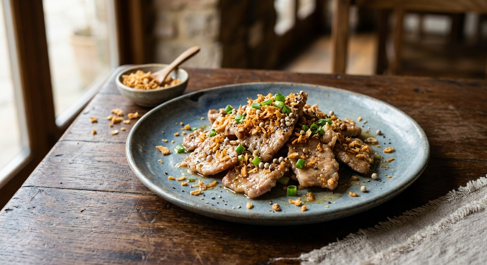

Pork fried hot with an outrageous amount of garlic and pounded peppercorns, finished with a light oyster glaze — the dish Thai menus translate as 'garlic and pepper'.

Pad kratiem prik thai has no chilli heat, no coconut milk, no herbs — just garlic and pepper, used with a confidence that seems almost rude. It is the dish Thai cooks themselves order at rice shops when they want to taste the kitchen's basic technique: there is nowhere to hide. On UK menus it appears as "pad gra-tiem prig thai", and it is the answer every Thai parent gives to a child who will not eat spicy food.
The name is precise: kratiem is garlic, prik thai is pepper — white pepper in most versions, but the best home recipes insist on whole black peppercorns pounded at the last minute, because pre-ground powder has already lost the volatile oils. The recipe below is the dry, garlic-forward version; a famous Kapook "ancient recipe" variant swaps in crisp-fried garlic, and the prawn version adds coriander root. All three are covered.
| Thai | English | Amount |
|---|---|---|
| หมูสามชั้น / สันนอก | Pork belly or collar, sliced bite-size (or prawns/chicken) | 300–400 g |
| กระเทียม | Garlic, finely pounded or minced | 2 tbsp (go heavy) |
| พริกไทยดำ | Whole black peppercorns (or white pepper), pounded rough | 1–2 tsp |
| รากผักชี | Coriander root, pounded (prawn version) | 1 tsp |
| น้ำมันพืช | Vegetable oil | 2 tbsp |
| ซีอิ๊วขาว | Light soy sauce | 1 tbsp |
| น้ำปลา | Fish sauce | ½ tbsp |
| ซอสหอยนางรม | Oyster sauce (saucy variant) | 1–2 tbsp |
| น้ำตาลทราย | Sugar | ½ tsp |
| เกลือ | Salt | a pinch |
| ผักชี | Coriander leaves, to finish | a few sprigs |
Three versions across the sources: (1) dry home version — garlic and peppercorns pounded together, fried, then the pork, seasoned with only soy, fish sauce and a pinch of salt (Wongnai); (2) the "ancient recipe" — garlic pounded fine and fried crisp in the oil first, removed, then returned to the finished pork with an oyster-sauce glaze (Kapook boran); (3) prawn version — coriander root pounded with the garlic and pepper, prawn heads' tomalley fried in, served over rice with crisp fried garlic and pork crackling on top (Kapook roundup).
White pepper or black peppercorns? UK menus translate prik thai as white pepper, and most restaurants use the powder. But Wongnai's recipe is explicit that the dish wants whole black peppercorns pounded rough — the pre-ground stuff "doesn't smell the same". The Kapook recipes split the difference and use pounded pepper for the paste plus a sprinkle of powder at the end.
Garlic: in the paste, or fried crisp? The classic method pounds garlic into the paste and fries it with the meat. The Kapook "ancient recipe" does something different: the garlic is fried crisp in the oil first, removed, and only returned as a crunchy topping — the pork cooks in garlic-infused oil. The best versions do both.
Coriander root: yes or no? The prawn version (Kapook roundup, from a Pantip member) pounds coriander root in with the garlic and pepper; the pork recipes skip it. It is the difference between a seafood flavour base and a plain one.
Oyster sauce: how much? The dry home version uses none — just soy, fish sauce and salt. The boran version glazes with oyster sauce, sugar and a drop of dark sweet soy for colour. UK restaurants almost always make the glazed version.
Pork cut. Wongnai uses belly or collar with some fat — lean cuts dry out. Kapook's boran version just says "pork, sliced". The prawn version is a different dish wearing the same name.
This recipe is translated from the following Thai-language sources. Where they disagree, we've said so.